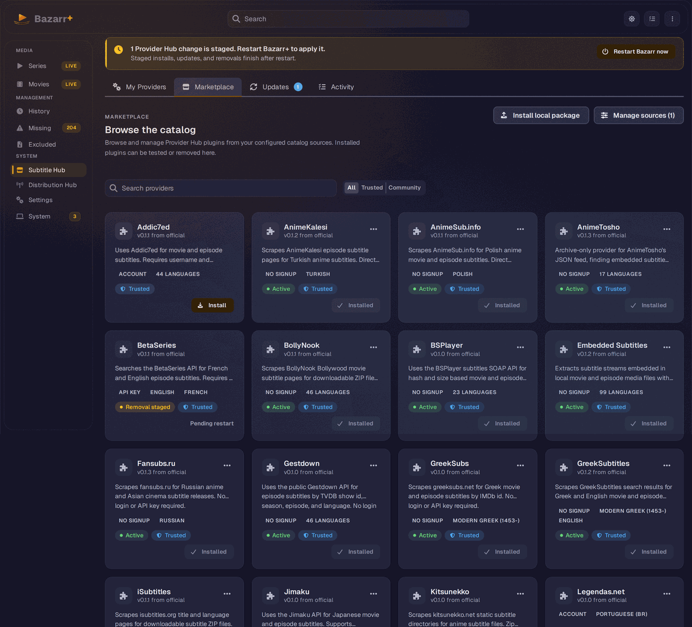
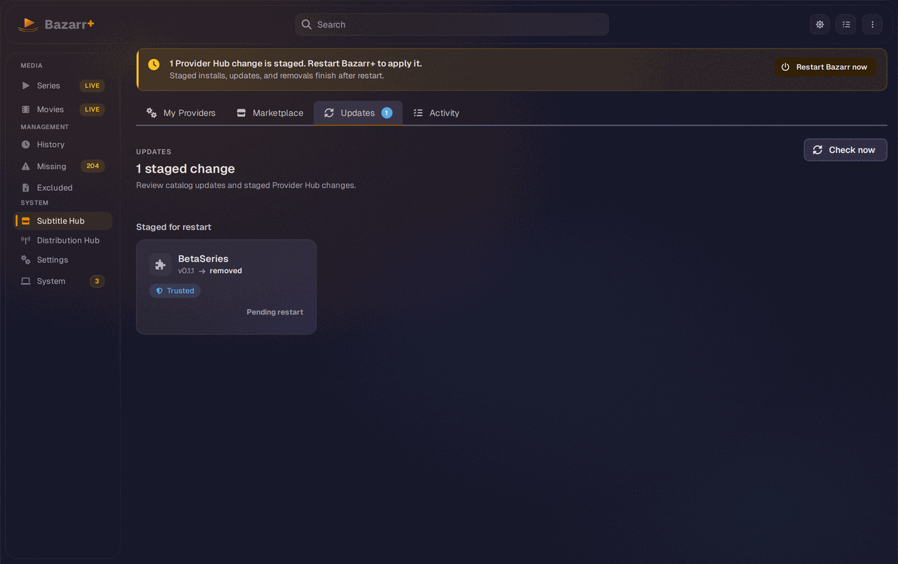

In Bazarr+ v2.4.0 (Prism) the catalog becomes the canonical source for subtitle providers. Catalog plugins now install under the same id as the shipped built-in and replace it, and on startup Bazarr+ auto-installs the official-catalog version of every provider you have enabled. You manage all of this from the Subtitle Hub page in the left navigation.
What's new in 2.4.0
- Built-in replacement. A trusted official-catalog plugin (for example
subdl,opensubtitles,embeddedsubtitles) installs under the same id as the shipped built-in and overwrites it in the registry. You get one card per provider, marked PLUGIN, not a duplicate. - Startup auto-install and shadow. On every startup Bazarr+ reconciles your enabled providers against the official catalog. For each enabled provider still served by a shipped built-in that the catalog offers, it installs the catalog version and shadows the built-in. This is the migration bridge toward an all-catalog provider set.
- "Installing providers" startup stage. The startup checklist ("Bazarr+ is starting up") shows an Installing providers stage while this work runs.
- Local package installs. You can install a provider from a local
.zippackage. Local packages are always treated as untrusted and can never shadow a built-in. - Config carries over. Because the plugin reuses the built-in id, it reads the same
settings.<id>section, so credentials, enabled state, priority, and language exclusions move to the plugin automatically.
How startup auto-install works
Auto-install runs once per startup, inside the init sequence, before providers are activated and registered. You do not trigger it, and there is nothing to click. It is the engine behind the Installing providers stage on the startup screen.
Here is exactly what it does and what bounds it:
- Force-refreshes only the official catalog source so a newly published provider id is picked up.
- Runs only when there is work. If an enabled provider is not yet installed from the catalog, it installs it. If everything is already installed, it does nothing.
- Idempotent. It skips providers that are already installed and retries previously failed rows on a later boot.
- Bounded by a 180 second wall-clock budget shared across bundle fetch and virtual environment build, so a slow or stuck install can never block boot.
- Never blocks or crashes startup. If a catalog is unreachable, Bazarr+ logs it and continues. The shipped built-in keeps serving until its plugin is ready.
Your provider configuration is preserved through this process. The plugin reuses the built-in id, so it reads the same settings.<id> config section. Credentials such as a SubDL API key, the enabled state, priority order, and language exclusions all carry over automatically. The only values that do not auto-carry are keys a plugin deliberately renamed.
BAZARR_DISABLE_PROVIDER_AUTOINSTALL=1. Bazarr+ then leaves your enabled built-ins as they are and skips the reconcile step. Installs you perform yourself from the Marketplace still work.
BAZARR_DISABLE_PROVIDER_AUTOINSTALL=1The Subtitle Hub tabs
Open Subtitle Hub from the left navigation (route /subtitle-hub). The page has four tabs: My Providers, Marketplace, Updates, and Activity.
My Providers
This is the enabled search providers grid. Add shipped providers or active Provider Hub plugins from the same + button. The Provider Priority toggle queries providers in priority order and stops at the minimum score. Each enabled provider is a card numbered by priority. Catalog-backed providers are marked PLUGIN with their language count and signup type (NO SIGNUP, API KEY, or ACCOUNT). The same tab holds the Anti-captcha and Integrations (embedded and metadata) sections. When no provider is enabled, the empty state nudges you toward the Marketplace but keeps the + add control.
Marketplace
This tab browses the catalog. It has a search box, an All / Trusted / Community filter, and a card for each catalog provider with Trusted, Active, and Installed badges plus an Install button. Manage installed plugins (Test connection, Uninstall) from each card's actions menu. You add and configure catalog sources here too.

Updates
The Updates tab lists pending plugin updates and pending-restart items. When a plugin has a newer catalog version, or when an install, update, or removal is staged and waiting for restart, it shows here.

Activity
The Activity tab records catalog refreshes, installs, updates, tests, and removals, each with durations, versions, and any errors. When something does not behave as expected, this is where you look first.
Installing a provider from the Marketplace
Most providers reach you automatically through startup auto-install. To add one yourself, or to install a provider you have not enabled before:
- Open Subtitle Hub and switch to the Marketplace tab.
- Refresh the official catalog source if the list is empty or stale.
- Use the search box and the All / Trusted / Community filter to find the provider. Review its card: trust label, version, supported media, and languages.
- Click Install. Bazarr+ downloads the pinned bundle, verifies hashes, installs dependencies into an isolated virtual environment, and smoke-tests the worker.
- Restart Bazarr+ when the staged-change banner appears.
- After restart, open My Providers, add the provider with the
+button if it is not already there, and save settings.
Installing a local package
You can install a provider from a local .zip package instead of a catalog source. The install is tracked with origin local.
- Open the Marketplace tab and choose to install from a local package.
- Select the
.zipfile. Bazarr+ verifies, dependency-installs, and smoke-tests it the same way it does a catalog install. - Restart Bazarr+ when the staged-change banner appears.
.zip install can never shadow or replace a built-in provider. Only trusted official-catalog entries are allowed to take over a built-in id.
Sources and trust
Bazarr+ ships with the official catalog source (LavX/bazarr-provider-catalog). You can add community GitHub catalog sources, but Bazarr+ stores custom sources as untrusted even if a caller tries to mark them trusted.
Only trusted official-catalog entries are allowed to replace a built-in, which is the migration allow-list. Untrusted custom-source plugins and local packages can never shadow a built-in. This does not block community plugins, it keeps the trust signal honest so you can tell official entries from custom ones before installing code.
dev_ref override that pins it to a specific branch. A stale dev_ref hides catalog updates, because the source keeps reading the old branch. If new catalog providers are not appearing, check whether a dev_ref override is pinning the official source.
Staged lifecycle and restart
Provider Hub does not hot-reload Python provider modules, because live unload and reload of provider code is risky when third-party dependencies are involved. Installs, updates, and removals are staged and applied on restart. When a change is staged you see a banner: "a Provider Hub change is staged. Restart Bazarr+ to apply it."
Before staging, provider code is hash-verified, dependency-installed into an isolated virtual environment, and smoke-tested in a worker. Bazarr+ keeps the currently active provider running until restart, then promotes or removes staged plugins during startup. A heavy provider with large dependencies installs within the 180 second budget during the Installing providers stage, and the built-in keeps serving until the plugin activates.
Catalog and SDK
The official catalog lives at LavX/bazarr-provider-catalog. It contains the catalog manifest, provider packages, SDK tooling, and tests for provider authors.
The SDK is authoring tooling. Installed providers do not import it at runtime.
python3 -B -m sdk validate
python3 -B -m sdk hash providers/<id>
python3 -B -m sdk build-catalog
python3 -B -m sdk smoke-testProvider packages must declare a manifest, pinned files, SHA-256 hashes, bundle hash, entry module, entry class, supported media, languages, and exact hash-checked dependencies. To replace a built-in, a package must publish under that built-in's id in the trusted official catalog.
Troubleshooting
Marketplace is empty. Refresh the official source from the Marketplace tab. If you use a custom source, confirm the GitHub URL and branch are reachable.
Provider installed but does not run. Check for the staged-change banner. Staged plugins are promoted during startup, not while Python provider code is already loaded. Restart Bazarr+ to apply.
A newly published catalog provider is not appearing. Auto-install runs on startup only. A freshly published catalog change needs a restart to be picked up. Also confirm a stale dev_ref is not pinning the official source to an old branch.
Install failed. Open the Activity tab. Hash mismatches, missing files, dependency failures, worker import errors, and smoke-test failures are recorded there. Auto-install retries previously failed rows on a later boot.
Duplicate provider cards. A pre-2.4 install that used a different plugin id can briefly show a duplicate next to the canonical built-in id. Uninstall the old one. Startup auto-install brings back the canonical provider under the built-in id.
Auto-install is taking too long or you want it off. Set BAZARR_DISABLE_PROVIDER_AUTOINSTALL=1 to skip the startup reconcile. The 180 second budget already prevents auto-install from blocking boot, so this is for operators who want to manage providers manually.
Custom source looks untrusted. That is expected. Custom catalog sources are intentionally labeled untrusted so you can distinguish them from the official source, and they cannot replace a built-in.
Next steps
- Getting Started if you have not installed Bazarr+ yet
- Distribution Hub to expose your providers through the multi-tenant API
- External Integration for Jellyfin and VLSub clients
- Migration from upstream if you are switching from stock Bazarr